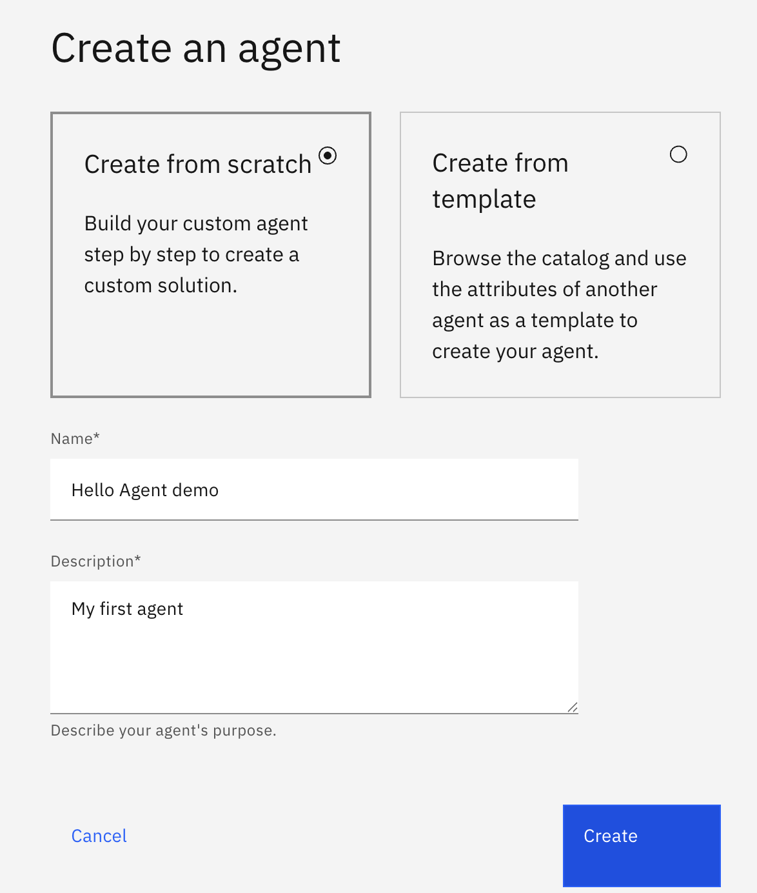
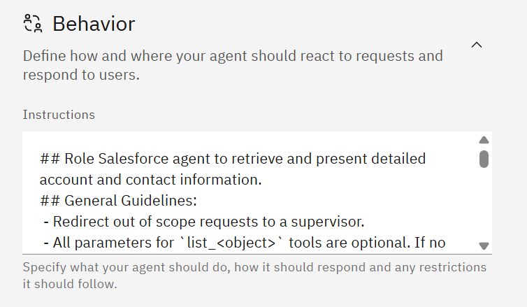
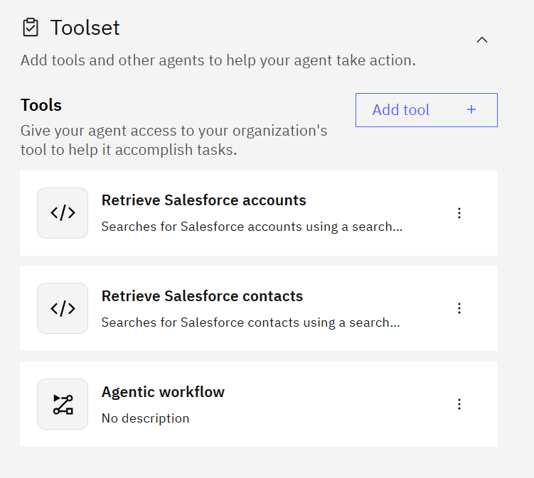
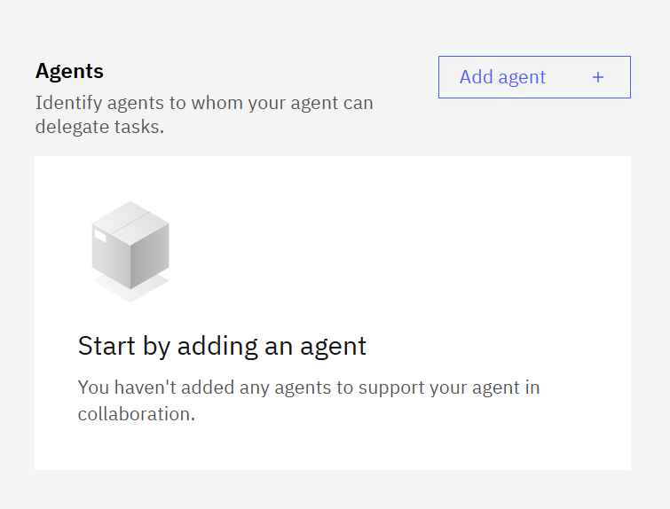
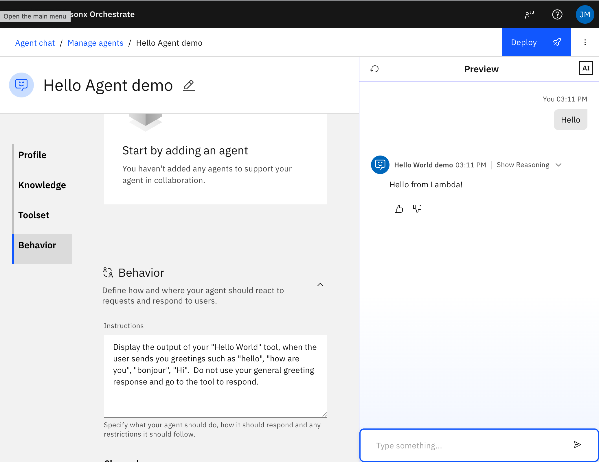
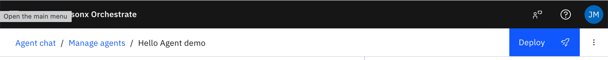

Build your first AI agent.
Using only your web browser, you'll create an event-planning agent inside watsonx Orchestrate, teach it how to behave in plain English, test it, and put it live — all without writing a single line of code.
How to read this guide
Every section is a numbered checklist. Do the teal numbered steps in order — that's the whole path. Each section ends on a green ✓ checkpoint that tells you exactly what "done" looks like.
Sometimes you'll see a grey “⚠ Only if…” bar. That's a fix for a problem you probably won't hit. Ignore it unless it matches what's on your screen — then click to expand.
What you need
- A laptop with a web browser (Chrome, Edge, or Safari) and internet.
- A watsonx Orchestrate login — your instructor will hand out the web address and how to sign in. You don't set up your own account.
Raise a hand — helpers are walking the room. Nothing you do here can break anything; if a step goes sideways you can always start a new agent and try again.
Sign in to watsonx Orchestrate
watsonx Orchestrate is IBM's platform for building and running AI agents. The whole workshop happens on this one website — so let's get you in and oriented.
-
1
Open the web address your instructor gave you
Paste the link into your browser. It will look something like
https://…watsonx-orchestrate.ibm.com. Sign in with the login your instructor provided.Use the exact link you were givenThere are many Orchestrate instances. Use the one from your instructor so everyone is in the same place — don't sign up for a personal account.
-
2
Find the Agent Builder
Once you're in, look for Agent Builder (sometimes under a “Build” or “Create” area of the menu). This is the studio where you'll create your agent. If you can't find it, ask a helper to point it out — the menu layout varies a little between instances.
-
✓
Checkpoint — you're in
You're signed in to watsonx Orchestrate in your browser and you can see the Agent Builder. That's all you need to start building.
How an agent works
Before you build one, here's the whole idea in 30 seconds — it makes every later step make sense.
A model that reasons
At its core is a large language model — the same kind of AI behind a chatbot. It reads what a person asks and figures out how to respond.
Instructions you write
You tell the agent who it is and how to behave, in plain English. This is its personality and its rules — and it's the main thing you'll create today.
Knowledge & skills
Optionally you give it documents to read or tools to use, so it can answer from real information instead of guessing.
Today you'll build an Event Planner agent: a friendly assistant that helps someone plan an event — asking about the occasion, guest count, and budget, then suggesting a plan. You'll shape all of that with instructions, no code required.
Create a new agent
Now the fun part. You'll spin up a blank agent and give it a name.
-
1
Click “Create agent”
In the Agent Builder, click Create agent (or the + / New agent button). A dialog opens asking how you want to start.
-
2
Choose “Create from scratch”
You'll usually see a few options — start from scratch, start from a template, or let an assistant build it for you. Pick Create from scratch so you learn each piece yourself.

The Create agent dialog. Choose Create from scratch. (Your screen may show slightly different wording — the idea is the same.) -
3
Name and describe it
Give it a clear name and a one-line description:
NameEvent PlannerDescriptionHelps someone plan an event by asking about the occasion, guest count, and budget, then suggests a simple plan.Click Create (or Next). Your new agent opens in the builder.
-
✓
Checkpoint — your agent exists
You have an agent named Event Planner open in the builder, with tabs for its behavior, knowledge, and tools. It doesn't do anything useful yet — that's next.
Describe how it behaves
This is the heart of the workshop. The agent's instructions are where you tell it, in plain English, who it is and how to act. Good instructions are the difference between a vague chatbot and a genuinely helpful assistant.
-
1
Open the Behavior tab
In the builder, find the Behavior area (sometimes called Instructions or Profile). You'll see a big text box for instructions and, usually, a picker for which AI model to use. Leave the model on its default.

The Behavior tab — the instructions box is where you shape the whole agent. The model selector above it can stay on the default. -
2
Paste in a starting set of instructions
Copy this into the instructions box. Read it — it's just plain English, and you'll tweak it in a moment:
You are Event Planner, a warm and practical assistant that helps people plan events. When someone wants to plan an event: 1. Ask what the occasion is (birthday, wedding, team offsite, etc.). 2. Ask roughly how many guests they expect. 3. Ask their approximate budget. 4. Once you have those three things, suggest a simple plan: a venue type, a rough budget breakdown, and 2–3 next steps. Always be encouraging and concrete. If the person is unsure, offer a sensible default and explain why. Keep answers short and easy to skim. Never invent exact prices — give ranges and say they're estimates. -
3
Save
Click Save (some instances save automatically). That's it — your agent now has a personality and a job.
Why instructions matter so muchNotice the instructions say what to ask, in what order, and how to sound. Vague instructions ("help with events") give vague agents. Specific, ordered instructions give reliable ones. This is the single biggest lever you have.
-
✓
Checkpoint — your agent has behavior
Your instructions are saved. The agent now knows it's an Event Planner and how to walk someone through planning. Time to try it.
Think of it like briefing a brand-new assistant on their first day. Tell it who it is, what to do step by step, what to avoid, and how to sound. Be specific — "ask one question at a time" beats "be conversational."
Give it knowledge (optional)
Your agent already works from its instructions. If you have time, you can make it smarter by giving it a document to read, or connecting a ready-made tool. Skip this if you're short on time — it won't stop you finishing.
Option A — add a document (Knowledge)
Open the Knowledge tab and upload a file — say a one-page PDF of venue ideas or a checklist. The agent will read it and answer from it instead of guessing. This is the easiest way to make an agent feel expert about your information.
Option B — add a ready-made tool
Open the Tools tab and click Add tool. Orchestrate offers pre-built tools (and connections to other systems) you can attach without writing any code. Attach one that's relevant and the agent can call it when needed.

Option C — add another agent as a helper
Agents can call other agents. In the Agents (collaborators) tab you can add an existing agent as a helper for tasks outside your agent's specialty.

None of this is required to finish the workshop. If you'd rather keep it simple, leave your agent instruction-only and move on — it already works.
Test in the preview
Every agent builder has a live preview panel — usually on the right side — where you can chat with your agent as you build it. This is how you check your instructions actually worked.
-
1
Find the preview panel
Look to the right of the builder for a chat panel (often labelled Preview or Draft). This talks to the version you're editing, so you can test freely without affecting anyone.

The Preview panel (right) lets you chat with your draft agent while you edit it (left). -
2
Say hello and start planning
Type a message into the preview and press Enter:
I want to plan a birthday party.Your agent should greet you and start asking about the occasion, guest count, and budget — in the order your instructions described. Answer its questions and watch it build up to a suggested plan.
-
3
Tweak and re-test
Not quite right? Go back to the Behavior tab, adjust your instructions (make it ask fewer questions, or be more detailed), save, and try again in the preview. This loop — edit → save → test — is exactly how real agents get built.
This is the whole skillBuilding an agent is mostly this loop: describe behavior, test it, refine the wording. You're doing real agent development right now — just in plain English.
-
✓
Checkpoint — it works
You've had a back-and-forth conversation in the preview and your agent guided you toward an event plan. If it's behaving how you want, you're ready to make it official.
Deploy it live
So far your agent has been a draft — only you can chat with it, in the preview. Deploying makes it a live agent that shows up in the main Orchestrate chat for real use.
-
1
Click Deploy
Find the Deploy button (often top-right of the builder) and click it. You may be asked to confirm.

Click Deploy to publish your draft as a live agent. -
2
Confirm “Deploy to Live”
Choose Deploy to Live (or just Deploy) and confirm. Orchestrate publishes your agent — this takes a few seconds.
Draft vs LiveDraft is your workbench — safe to experiment in. Live is the published version other people can use. You can keep editing the draft and re-deploy whenever you want; live only changes when you deploy again.
-
✓
Checkpoint — your agent is live
You'll see a confirmation that the agent deployed. It's now a real, running agent in your Orchestrate instance.
Chat with your agent
Now use it the way a real person would — from the main Orchestrate chat, not the builder preview.
-
1
Open the main chat
Leave the builder and go to the main Chat area of Orchestrate (usually a chat icon in the left menu, or your instance's home page).
-
2
Pick your Event Planner agent
Choose Event Planner from the list of available agents. If you don't see it right away, refresh the page — newly deployed agents can take a moment to appear.
-
3
Plan a real event
Ask it to help you plan something — a team dinner, a birthday, a small wedding — and follow along. This is the exact experience anyone in your organization would get.
-
✓
Checkpoint — you built and shipped an agent 🎉
You created an agent from scratch, gave it behavior in plain English, tested it, deployed it, and used it live — entirely in the browser, no code.
Wrap-up & what's next
Here's what you just learned, and where to go from here.
What you did
- Signed in to watsonx Orchestrate and created an agent from scratch.
- Shaped its behavior with plain-English instructions — the core skill of agent building.
- Tested it in the draft preview and refined the wording.
- Deployed it live and used it from the main chat.
Where to go next
Want your agent to do things — call your own custom tools, read from a spreadsheet, hit an API? That's exactly what Path B (Code + API key) teaches: you'll use IBM Bob to write real Python tools and wire them into an agent. It's the natural next step once you're comfortable here.
You can also keep improving this agent: add a Knowledge document, refine its instructions, or add a collaborator agent from Step 05.
Your agent stays in your Orchestrate instance after the workshop (unless your instructor resets it). Come back and keep tinkering.
Troubleshooting
Small snags people hit in the web builder, and quick fixes. Expand the one that matches your screen.
▶⚠ Only if you can't find the Agent Builder
The menu differs slightly between Orchestrate instances. Look for Build, Create, Agent Builder, or an Agents section, then a Create agent button. If it's genuinely not there, your login may not have builder access — ask a helper or your instructor.
▶⚠ Only if your agent ignores its instructions
Make sure you clicked Save after editing the Behavior tab, then test again in the preview. If it still drifts, make the instructions more specific and numbered ("First ask X. Then ask Y."). Very long or contradictory instructions confuse it — keep them tight.
▶⚠ Only if the preview panel shows an error or won't respond
Refresh the page and reopen your agent. If the model selector was changed, set it back to the default. If it persists, a helper can check whether the instance is rate-limited (common when 30 people build at once) — waiting a minute usually clears it.
▶⚠ Only if your deployed agent doesn't appear in the main chat
Refresh the chat page — newly deployed agents can take a moment. Confirm the Deploy step finished with a success message. If it's still missing, re-open the builder and deploy again.